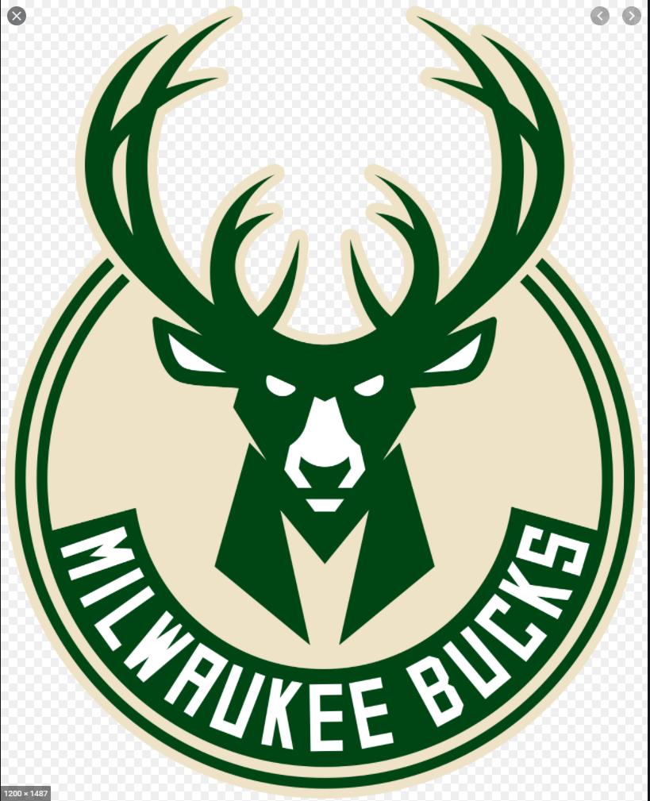
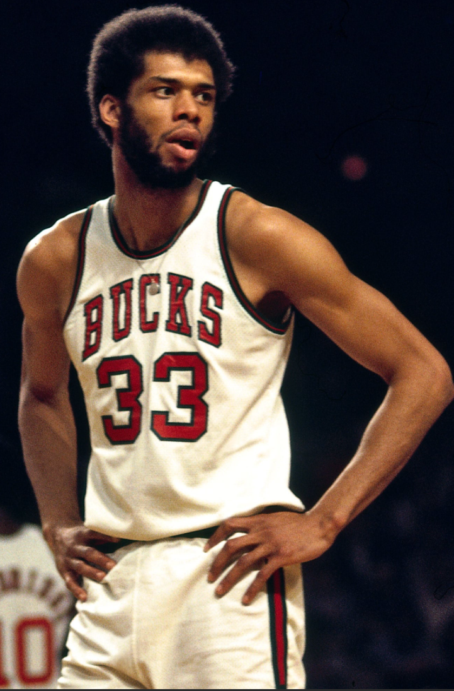
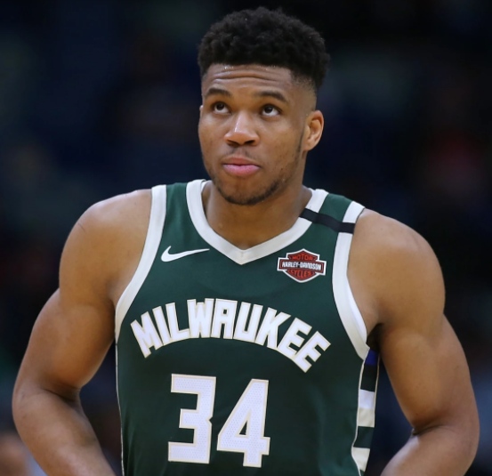

Bucks
The Milwaukee Bucks are an American professional basketball team based in Milwaukee. The Bucks compete in the National Basketball Association (NBA) as a member of the league's Eastern Conference Central Division. The team was founded in 1968 as an expansion team, and play at the Fiserv Forum. Former U.S. Senator Herb Kohl was the long-time owner of the team, but on April 16, 2014, a group led by billionaire hedge fund managers Wes Edens and Marc Lasry agreed to purchase a majority interest in the team from Kohl, a sale which was approved by the owners of the NBA and its Board of Governors one month later on May 16. The team is managed by Jon Horst, the team's former director of basketball operations, who took over from John Hammond in May 2017. The Bucks have won one league title (1971), two conference titles (1971 and 1974), and 15 division titles (1971–1974, 1976, 1980–1986, 2001, 2019, 2020). They have featured such notable players as Kareem Abdul-Jabbar, Sidney Moncrief, Oscar Robertson, and Bob Lanier among others. Abdul-Jabbar and Giannis Antetokounmpo have been named the NBA's Most Valuable Player while playing for the Bucks, for a total of five MVP awards.
Kareem Abdul-Jabbar (born Ferdinand Lewis Alcindor Jr.; April 16, 1947) is an American former professional basketball player who played 20 seasons in the National Basketball Association (NBA) for the Milwaukee Bucks and the Los Angeles Lakers. During his career as a center, Abdul-Jabbar was a record six-time NBA Most Valuable Player (MVP), a record 19-time NBA All-Star, a 15-time All-NBA selection, and an 11-time NBA All-Defensive Team member. A member of six NBA championship teams as a player and two more as an assistant coach, Abdul-Jabbar twice was voted NBA Finals MVP. In 1996, he was honored as one of the 50 Greatest Players in NBA History. NBA coach Pat Riley and players Isiah Thomas and Julius Erving have called him the greatest basketball player of all time.
After winning 71 consecutive basketball games on his high school team in New York City, Alcindor was recruited by Jerry Norman, the assistant coach of UCLA, where he played for coach John Wooden on three consecutive national championship teams and was a record three-time MVP of the NCAA Tournament. Drafted with the first overall pick by the one-season-old Bucks franchise in the 1969 NBA draft, Alcindor spent six seasons in Milwaukee. After leading the Bucks to its first NBA championship at age 24 in 1971, he took the Muslim name Kareem Abdul-Jabbar. Using his trademark "skyhook" shot, he established himself as one of the league's top scorers. In 1975, he was traded to the Lakers, with whom he played the final 14 seasons of his career and won five additional NBA championships. Abdul-Jabbar's contributions were a key component in the "Showtime" era of Lakers basketball. Over his 20-year NBA career, his teams succeeded in making the playoffs 18 times and got past the first round 14 times; his teams reached the NBA Finals on 10 occasions.
At the time of his retirement at age 42 in 1989, Abdul-Jabbar was the NBA's all-time leader in points scored (38,387), games played (1,560), minutes played (57,446), field goals made (15,837), field goal attempts (28,307), blocked shots (3,189), defensive rebounds (9,394), career wins (1,074), and personal fouls (4,657). He remains the all-time leader in points scored, field goals made, and career wins. He is ranked third all-time in both rebounds and blocked shots. In 2007, ESPN voted him the greatest center of all time, in 2008, they named him the "greatest player in college basketball history", and in 2016, they named him the second best player in NBA history (behind Michael Jordan). Abdul-Jabbar has also been an actor, a basketball coach, a best-selling author, and a martial artist, having trained in Jeet Kune Do under Bruce Lee and appeared in his film Game of Death (1972). In 2012, Abdul-Jabbar was selected by Secretary of State Hillary Clinton to be a U.S. global cultural ambassador. In 2016, President Barack Obama awarded him the Presidential Medal of Freedom.
Giannis Sina Ugo Antetokounmpo born December 6, 1994 is a Greek professional basketball player for the Milwaukee Bucks of the National Basketball Association (NBA). Born in Greece to Nigerian parents, Antetokounmpo began playing basketball for the youth teams of Filathlitikos in Athens. In 2011, he began playing for the club's senior team before entering the 2013 NBA draft, where he was selected 15th overall by the Bucks. Antetokounmpo's nationality, in addition to his combination of size, speed and ball-handling skills earned him the nickname "Greek Freak". In 2016–17 he led the Bucks in all five major statistical categories and became the first player in NBA history to finish a regular season in the top 20 in all five statistics of total points, rebounds, assists, steals, and blocks. He received the Most Improved Player award in 2017. Antetokounmpo has received four All-Star selections, including being selected as an All-Star captain in 2019 and 2020, as he led the Eastern Conference in voting in these two years. Antetokounmpo is a two-time NBA Most Valuable Player and was named the NBA Defensive Player of the Year in 2020.